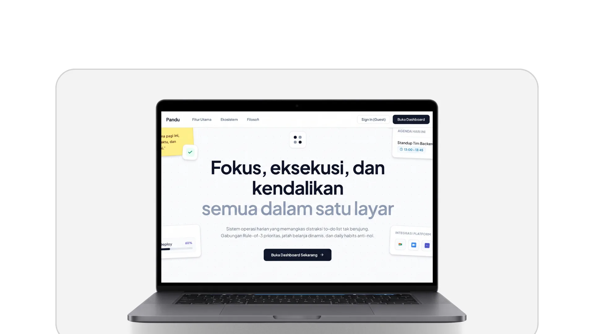

Daily OS & Productivity
Pandu
Sistem operasi harian berbasis satu layar untuk produktivitas terfokus. Menggunakan metodologi Rule-of-3 prioritas berwaktu, pemantauan batas belanja dengan deteksi real-time, serta pelacakan habit harian dengan prinsip konsistensi. A distraction-free, single-screen daily operating system designed for focus. Features time-targeted Rule-of-3 priorities, deficit-aware daily spending limits, and habit tracking.
React
TypeScript
Tailwind CSS
Laravel
PostgreSQL
